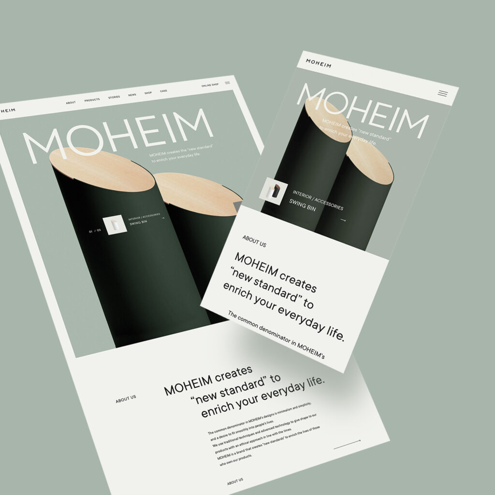
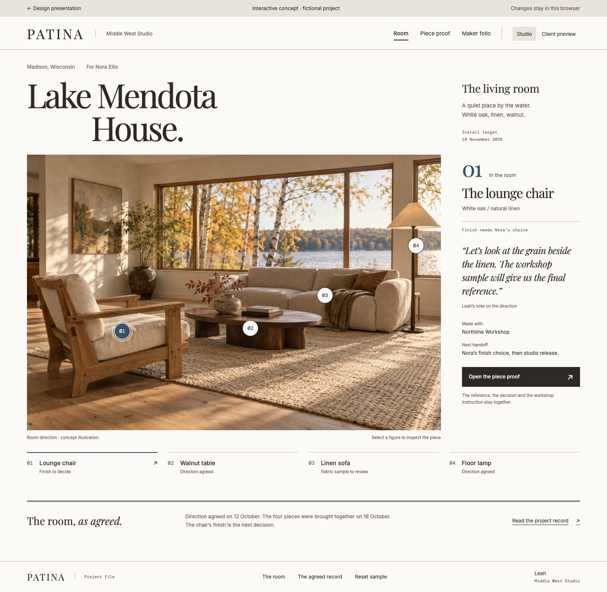
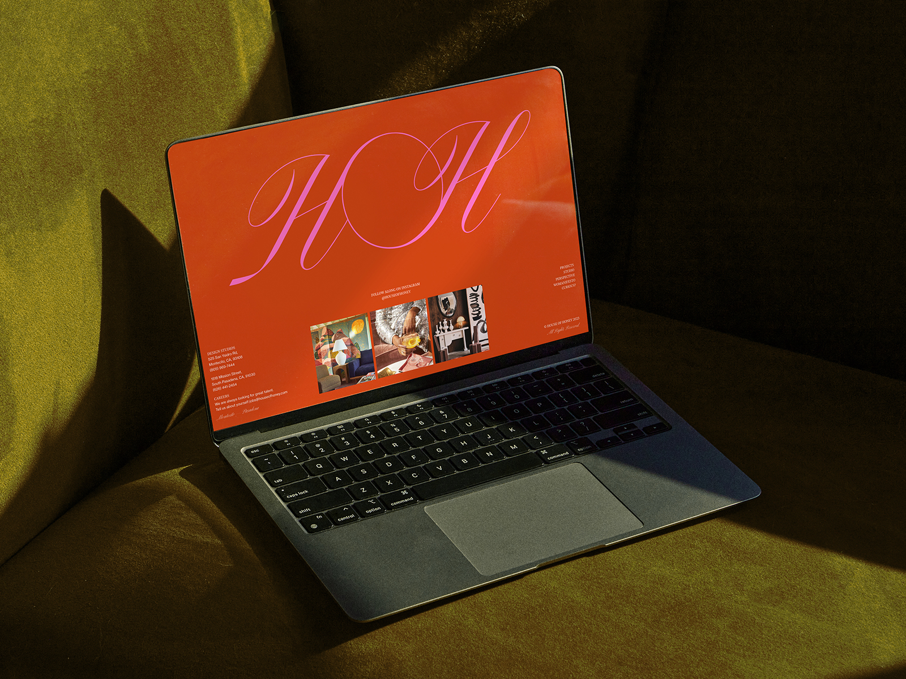

MOHEIM
baqemonoAn object gets the scale of a gallery exhibit, with variants and precise product facts close at hand.
For Patina: move naturally from the room to the piece, then to its materials and specifications.
The Room Proof
Keep the beauty of Patina’s paper document. Give its imagery a job.
A room, its pieces, and the instructions that make them real—connected through one working composition.
Enter the prototype
The room is now
part of the work.
Select a furnishing where it belongs. Bring its materials forward. Carry the agreed choice into an exact maker instruction. The interface changes shape as the work changes.
See the three viewsOutside the existing system
We looked for a point of view in navigation, scale, and detail. These are researched references; the applications to Patina are our design interpretation.

An object gets the scale of a gallery exhibit, with variants and precise product facts close at hand.
For Patina: move naturally from the room to the piece, then to its materials and specifications.

Rooms have an authored identity. The scale of type and photography does more than a surrounding interface frame.
For Patina: the room direction leads; annotations belong to the particular pieces within it.
Image: archived submission. The current site has changed since the award.A preface and table of contents make the site readable as a document with meaningful entries.
For Patina: a numbered object index connects the visual room to a useful maker folio.
These references informed the proposal; the named studios did not collaborate on it. Their expressive presentation is adapted here around repeatable studio work, direct controls, and a readable specification.
What remains Patina
Authored notes. Warm paper. A considered margin. An action placed where the work needs it. Those qualities return here.
The change is in how the document is entered: through a room and its objects. Patina’s existing Playfair, Inter, and restrained mono references remain.

One document, three ways to work
Follow the chair from the room direction into a finish decision and an unreleased maker brief. Each view has its own composition and a clear purpose.
Begin with the room
Four numbered references connect the room to its furnishings. Select the chair or use the text index; the working margin responds to the same object.
Try selecting a different furnishing, then open the chair’s proof.
Explore RoomA studio preference, a client’s recorded choice, and a maker release are separate steps. The prototype demonstrates the first two and prepares a draft folio. Nothing is sent or released.
The characteristic interaction
The piece moves into focus, with a small room reference kept in the same document. The client’s choice is then legible in the same object’s maker instruction.
 Room context stays with the work
Room context stays with the work
From a place in the room
to an instruction in the folio.
For the founding team
The proposal is ready to be judged on a new interaction and a new composition—not a palette comparison.
Explore the room, open a piece, and read the folio. Then consider whether the beauty helps you understand and advance the job.
Does choosing through the room feel natural?
Does the original document’s personality survive?
Where would you want a denser view for daily work?